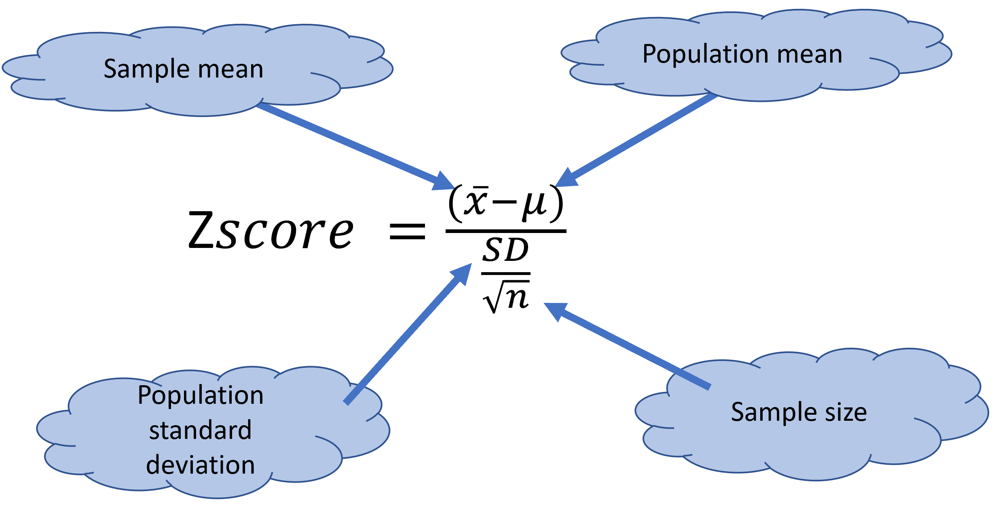
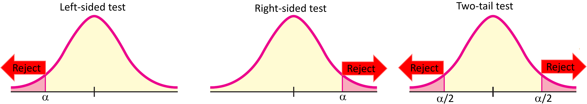
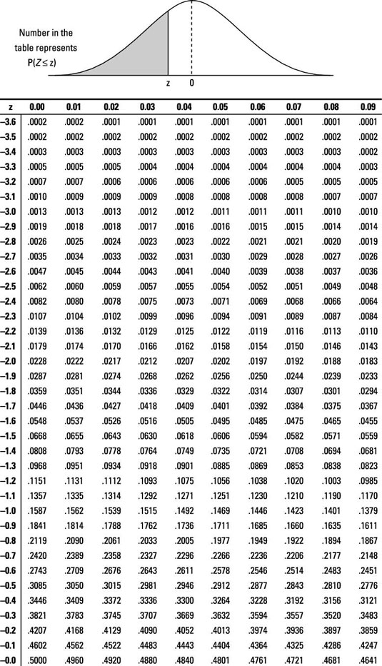

The one-sample Z-test by hand
As mentioned earlier, the Z-test is used in cases when you want to run a one-sample test, you know the population standard deviation and your sample size is larger than 30 individuals. (grabs this token L).
The principle of the Z-score is very straightforward. Basically, this score allows you to know how many Standard deviations from the mean a given sample is.
As it has been indicated several times in this book, it is relatively easy to know the proportion of individuals in a population at certain standard deviations from the mean (when the data are normally distributed, of course).
As an example, plus or minus two standard deviations from the mean includes about 95% of the individuals in that population (assuming the population is normally distributed).
Given this principle then you can easily know the fraction of individuals at certain standard deviations from the mean.
The z-cores is basically an index that allows you to convert/standardize any value to a given number of standard deviations from the mean.

Figure 10.2: Z-test fucntion
Lets try an example.
Say you want to know if the USA female team run particularly slower the 100m race than prior teams.
You studied 31 girls of the current team and their times runing 100m in seconds were:
9.7, 9.7, 8.9, 9.2, 9.4, 9.1, 9.5, 9.6, 8.9, 9.1, 9.5, 9.2, 9.5, 9.4, 9.6, 9.2, 9.9, 10, 9.3, 9.6, 9.1, 9.5, 9.2, 9.5, 9.4, 9.6, 9.2, 9.9, 10, 9.3, 9.6.
In turn, the historical time running that race is 9.5sec +/-0.2sec.
From the example, it looks like we have one sample that we want to compare to a population. We have the standard deviation, SD, of the population and our sample size is larger than 30, so the best test here is a Z-test.
As it is customary, we start by stating the hypothesis:
H0: Time USA team >= 9.5 sec The null hypothesis is how things are suppose to be or everything that the alternative hypothesis is not …that means, the historical time of 9.5sec or larger
H1: Time USA team < 9.5 sec The alternative hypothesis is what we are interested on, or claiming…that the USA team is slower than 9.5sec
Let’s calculate the z-score:
Sample=c(9.7, 9.7, 8.9, 9.2, 9.4, 9.1, 9.5, 9.6, 8.9, 9.1, 9.5, 9.2, 9.5, 9.4, 9.6, 9.2, 9.9, 10, 9.3, 9.6, 9.1, 9.5, 9.2, 9.5, 9.4, 9.6, 9.2, 9.9, 10, 9.3, 9.6) #lets put the values in a vector
SampleMean=mean(Sample) #mean time racing for the girls sampled
SampleSize= length(Sample) # this is the sample size or number of girls measured
#from the mean alone, we can see that this girls are slower than historical times...so a hint that someting may be right about our hyphothesis
SampleMean ## [1] 9.43871PopulationMean= 9.5 #this is the population mean...or the historical time it has taken people to run 100m
PopulationSD=0.2 #this is the population standard deviation
#let's now estimate the z-score using the equation above.
ZTest=(SampleMean-PopulationMean)/(PopulationSD/sqrt(SampleSize))
ZTest## [1] -1.70625Now you need to recall chapter 8 to find out if this is a left-, right- or two tail test. If you have forgotten, check the video as a refreshers:
Because, our alternative hypothesis is stating that the sample is smaller than, then we have to use a left-sided test.

Figure 10.3: Types of tests
And with that you should look for the significance level (\(\alpha\)) in a Z-table of a left-sided test, like this one below (These tables are in the back of each stats book and online).
The Z-table would give you the p-value for a given Z-value…in other words, what fraction of the population is beyond the given z-score.

Figure 10.4: Left-sided Z-table
To find out the p-value for a given Z-score in the left-sided Z-table, scroll down the first column looking for the first decimal point in your calculated z-score. In our case that will be -1.7.
Once on that row, go back to the first row, and move horizontally until the column with the second decimal point in your calculated Z-score, which in our case is 0.
Basically, you are looking for the value at the interception between the first decimal point in your calculated z-score indicated in the first column, and the second decimal of your z-score indicated in the first row of the Z-table.
In our case, the p-value for a Z-score of -1.70 is 0.0446.
What that tells you is that the girls in the USA team are as slow as the bottom 4.46% of all historical teams.
If we compare our significance level, \(\alpha\), of 0.05, to our calculated p-value of 0.0446, you can observed that the p-value is smaller than the \(\alpha\), so the Ho (null hypothesis) must go.
Basically, we reject the null hypothesis that the 100m run time of this team is 9.5sec or higher and conclude that these girls indeed run slower than the historical average.